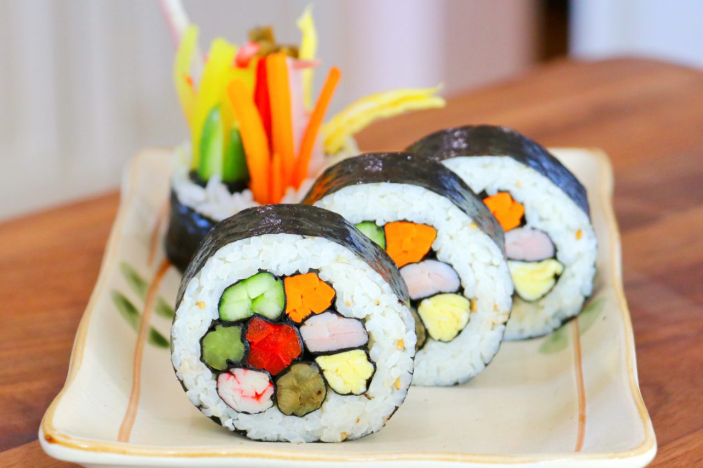

Easy Kimbap Recipe
How to Make Delicious Korean Seaweed Rice Rolls

Kimbap can be customized with various fillings according to personal preference.
It's a popular picnic food in Korea and is often enjoyed as a light meal or snack.
Leftover kimbap can be stored in the refrigerator for a day or two, but it's best enjoyed fresh
Ingredients
- 4 sheets of seaweed .
- 2 cups cooked short-grain rice, seasoned with sesame oil and salt
- 4-6 strips of pickled yellow radish (danmuji)
- 4-6 strips of cooked spinach
- 4-6 strips of carrots, julienned and sautéed
- 4-6 strips of imitation crab meat or cooked shrimp
- 4 eggs, beaten and cooked into thin omelets
- Sesame oil
- Salt and pepper to taste
- Soy sauce and/or spicy gochujang sauce for dipping (optional)
Steps
- Prepare all ingredients
- Lay a bamboo mat on surface and place a sheet of seaweed on top.
- Spread a thin layer of seasoned rice evenly over the seaweed.
- Arrange the filling ingredients horizontally across the center of the rice.
- Roll the kimbap tightly using the bamboo mat, applying gentle pressure as you roll.
- Seal the edge of the seaweed with a little water.
- Repeat with the remaining ingredients.
- Slice the rolled kimbap into bite-sized pieces using a sharp knife.
- Serve with soy sauce and/or spicy gochujang sauce for dipping, if desired.
Nutrition
- Kimbap is a nutritious dish packed with essential nutrients.
- t's a good source of carbohydrates from rice, providing energy.
- Vegetables like spinach and carrots offer vitamins and minerals.
- Protein from eggs and seafood contributes to muscle growth and repair.
- eaweed is rich in iodine and other trace minerals.